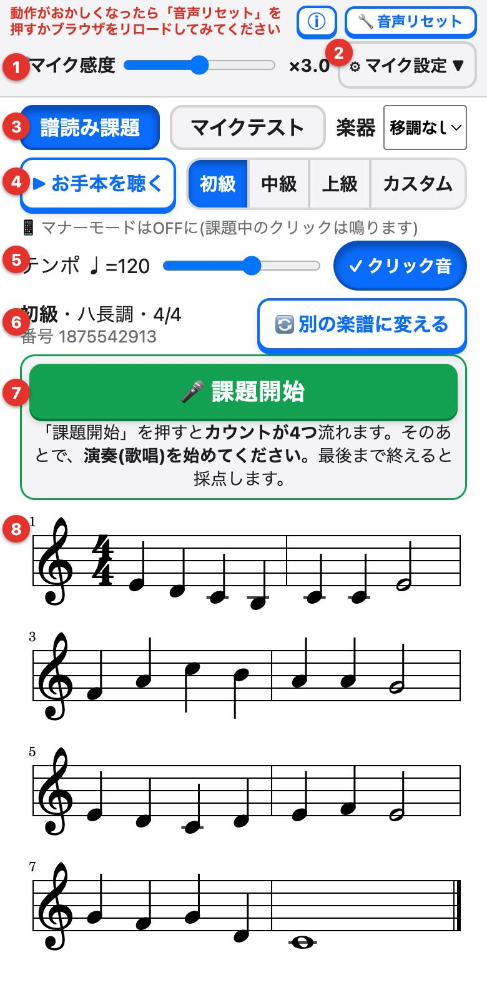
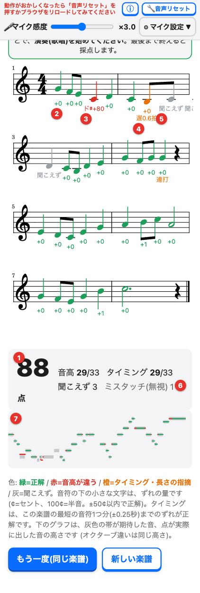

ソルフェージュ自習 - 仕様と使い方
楽譜を見て、歌う・楽器で演奏すると、音の高さとタイミングを自動で採点する、譜読み(ソルフェージュ)の自習アプリです。
1. 使い方
- 難易度(初級・中級・上級・カスタム)と、楽器を選びます。
- 必要なら「お手本を聴く」で、楽譜を聴きます。
- 「課題開始」を押すと、カウントが流れます。そのあとで、楽譜どおりに歌う(演奏する)。
- 最後まで終えると採点され、楽譜に結果が色分けで出ます。
- 「別の楽譜に変える」で、新しい楽譜に変えて、くり返し練習できます。

- マイク感度: 声や楽器の音が小さいときは、右へ動かして上げます(スマホ・タブレットは、最初から×3.0に設定してあります)。
- マイク設定(自動音量調整・入力の遅れの補正・上級者モードなど)。左隣の「音声リセット」は、音が出ない・始まらないときに押します。「ⓘ」は、この説明ページです。
- タブ(譜読み課題・マイクテスト)と、楽器の選択。トランペットやサックスなどは、ここで選びます。
- お手本を聴くと、難易度(初級・中級・上級・カスタム)の切り替え。
- テンポと、クリック音のON/OFF(OFFにすると、カウントも含めて無音になります)。
- 今の楽譜の難易度・調・拍子と、「別の楽譜に変える」。
- 課題開始: 押すとカウントが流れます。そのあとで演奏し、最後まで終えると採点されます。
- 楽譜。8小節です。
声でも、楽器でも使えます。マイクが拾うのは、1度に1つの音(単旋律)です。和音は判定できません。
2. 難易度とカスタム
| 初級 | 中級 | 上級 | |
|---|---|---|---|
| 調 | ハ長調 | 調号3つまでの長調・短調 | 調号5つまでの長調・短調 |
| 拍子 | 4/4 | 4/4・3/4 | 4/4・3/4・6/8 |
| 最短の音符 | 八分音符 | 八分三連符 | 十六分音符 |
| リズム | 基本的なリズム | シンコペーション(タイを伴うものを含む)、三連符 | 付点八分+十六分、十六分の連打、三連符、タイを伴うシンコペーション など |
テンポは、♩=40〜180で、自由に決められます(6/8は付点四分音符を1拍として数えます)。
カスタム
「カスタム」を選ぶと、折りたたまれた「カスタム設定」が出ます。設定を変えると、その場で楽譜が作り直されます。
- 拍子: 4/4、3/4、6/8、おまかせ
- 最短の音符: 四分音符まで、八分音符まで、三連符まで、十六分音符まで
- シンコペーション: なし、あり(タイを含む)
- 調: ハ長調だけ、長調だけ、長調と短調、チャーチモード(ドリア・フリギア・リディア・ミクソリディア・ロクリア)
- 調号の数: 3つまで、5つまで
3. 採点方式
マイクで聞き取った音を、1音ずつの区間に分け、楽譜の音符と順番に対応づけて、音符ごとに評価します。
音の高さ
- 楽譜の音との差が、半音の半分(±50セント)以内なら正解です。セントは、半音を100とした音程の単位です。
- オクターブ違いは、同じ音として正解にします(高い声で歌っても、低く歌っても構いません)。
- ずれた量は、音符の下に小さな文字で表示します(例:
+12)。外れたときは、実際に出した音名も添えます(例:ファ+80)。
タイミング
- 音を出し始めた時刻が、楽譜の位置から、「その楽譜で使われている最短の音符1つ分」以内のずれなら正解です。
- 例: 最短が八分音符の楽譜なら、八分音符1つ分までのずれは許容されます。最短が十六分音符の上級では、許容は小さくなります。
- 許容を超えると、「早」「遅」と、ずれた拍数を表示します。
- カウントとクリック(メトロノーム)の拍は、拍子ごとに決まります(4/4は4拍、3/4は3拍、6/8は付点四分音符の2拍)。
点数
点数 = (音高が正解の数 + タイミングが正解の数) ÷ (音符の数 × 2) × 100(小数点以下は四捨五入)
合格・不合格の基準は、設けていません。同じ楽譜でくり返したときに、点数が上がるかを目安にしてください。
そのほかの評価
| 項目 | 内容 |
|---|---|
| 聞こえず | 対応する音が、聞き取れなかった音符です(灰色で表示)。 |
| 余計な音 | 楽譜にない音が、聞き取れた回数です。 |
| 休符 | 休符の間に音が続いていると、「休めてない」と指摘します。休符の前で音を伸ばしすぎたときは、「長い」と指摘します。 |
| 音が短い | 期待の長さの半分(約45%)に満たない音を指摘します。標準では評価せず、「マイク設定」の「上級者モード」で有効にできます。 |
| タイ | タイで結ばれた音符は、1つの音として扱います。先頭の音符の発音だけを期待し、続きの音符は発音しなくて構いません。 |
| 同じ高さの連打 | 息や舌で区切らないと1つの音にまとまって聞こえます。高さが同じなら、演奏されたものとみなします(区切りは確かめられません)。 |
| ミスタッチ | 一瞬(約0.15秒未満で、近くの最短の音符の半分に満たない)だけ別の音が鳴った場合は、減点せずに無視します。音の途中に挟まっていて、前後が同じ高さなら、前後を1つの音につなげます。「ミスタッチ(無視)」の回数を、結果に小さく表示します。 |
| クリック音の回り込み | スピーカーのクリック音がマイクに入って、音程として検出された短い断片は、無視します。 |
入力の遅れの補正
マイクやBluetoothイヤホンの遅れで、全体に「遅れ」が出ることがあります。結果に、平均のずれが出たときは、「この分を補正する」で、補正できます。「マイク設定」の「入力の遅れの補正」で、手動でも調整できます。
4. 結果の見方

- 点数と内訳。音高とタイミングの正解数、聞こえず・余計な音などの回数が出ます。
- 緑の音符は、正解です。下の小さな数字は、音高のずれです(セント。100が半音)。
- 赤の音符は、音高が違います。実際に出した音名と、ずれが出ます(例: ド♯+80)。
- 橙の音符は、タイミングや長さの指摘です。ずれた拍数が出ます(例: 遅0.6拍)。
- 灰色の音符は、聞こえず(その音が聞き取れなかった)です。
- ミスタッチ(無視): 一瞬だけ別の音が鳴った回数です。減点はしません。
- グラフ: 灰色の帯が「期待した音」、点が「実際に出した音の高さ」です(緑=合っている、赤=ずれている)。
| 色 | 意味 |
|---|---|
| 緑 | 音高とタイミングが、正解 |
| 赤 | 音高が違う |
| 橙 | タイミングや長さに指摘がある |
| 灰 | 聞こえず |
下のグラフは、灰色の帯が「期待した音」、点が「実際に出した音の高さ」です(オクターブ違いは、同じ高さに重ねます)。
5. 移調楽器
トランペットやクラリネット(B♭管)、サックス、ホルンなどの移調楽器は、「楽器」で選びます。楽譜は、楽器の人が読む音(記譜音)のまま表示し、判定は実際に鳴る音(実音)で行います。お手本は、実音で鳴らします。
| 楽器 | 実音は記譜より |
|---|---|
| B♭管(クラリネット、トランペット、ソプラノサックス) | 長2度低い |
| E♭管(アルトサックス) | 長6度低い |
| B♭管(テナーサックス) | 1オクターブと長2度低い |
| E♭管(バリトンサックス) | 1オクターブと長6度低い |
| F管(ホルン) | 完全5度低い |
| A管(クラリネット in A) | 短3度低い |
低すぎる実音のお手本は、スマホのスピーカーで聞こえるよう、1オクターブ単位で高くして鳴らします(判定はオクターブ違いを区別しません)。
6. 楽譜の自動生成
楽譜は、毎回、自動で作られます。楽典の考え方に沿って、次のような決まりで作っています。
- 全体の形: 8小節を、前半4小節(問い、半終止)と後半4小節(答え、完全終止)に分けます。動機(2小節のまとまり)をくり返し、変化させます。
- 和声: 小節ごとにI・IV・Vの和音を割り当て、強拍には和音の構成音を置きます。
- 動き: 順次進行を中心にし、大きく跳躍したあとは、反対方向へ戻ります。ファや導音などの傾向音は、解決させます。
- 終止: 4小節目は第5音か第2音で、7小節目は第2音か導音で終わり、最後の主音へ解決します。
- 短調: 属和音の小節で、第7音を半音上げます(和声的短音階)。
- 選び方: 候補を数百通り作り、山(最高音)の位置、音域、ジグザグの少なさ、リズムの細かさなどで採点して、よいものを選びます。
「楽譜の番号」は、その楽譜を作った乱数の種です。
7. うまく動かないとき
- 音が出ない: スマホのマナーモードをOFFにしてください。画面上部の「🔧 音声リセット」も試してください。
- 「課題開始」が進まない、マイクが開始できない: 画面上部の「🔧 音声リセット」を押してください。直らなければ、ブラウザをリロードしてください。
- 音を拾わない: マイク感度を上げ(スマホは×3.0以上)、マイクに近づいてください。
- 全体に「遅れ」と出る: 結果の「この分を補正する」を押してください。
- 静かに練習したい: 「クリック音」をOFFにすると、カウントも含めて無音になり、画面の丸の点滅で拍を示します。
iPhoneでは、マイクを使っている間(課題中)の音は、マナーモードでも鳴ります(iOSの仕様です)。
8. データの扱い
- マイクの音は、お使いの端末の中だけで処理します。録音を保存したり、外部に送信したりしません。
- 設定(マイク感度、楽器、難易度、テンポなど)は、この端末のブラウザに保存されます。
9. 権利・ライセンス
オープンソースのソフトウェアと書体
このアプリは、次のオープンソースのソフトウェアと書体を使っています。それぞれの作者・権利者に感謝します。
| 名前 | 用途 | ライセンス |
|---|---|---|
| React / React DOM / scheduler | 画面の表示 | MIT |
| Tone.js | 音の再生、メトロノーム、マイクの音声処理の基盤 | MIT |
| standardized-audio-context / automation-events(Tone.jsが使用) | ブラウザ間の音声機能の差を吸収 | MIT |
| VexFlow | 楽譜の表示 | MIT |
| @babel/runtime / tslib | 上記ソフトウェアが使う補助コード | MIT / 0BSD |
| Bravura(Steinberg Media Technologies GmbH) | 楽譜の記号の書体 | SIL Open Font License 1.1 |
| Academico(Steinberg Media Technologies GmbH) | 楽譜の文字の書体 | SIL Open Font License 1.1 |
オープンソースのライセンス表記(著作権表示とライセンス全文)に、バージョンごとの一覧と全文があります。このページは、ビルドのたびに、配布物に含まれるソフトウェアから自動で作られます。
本アプリ自体
本アプリ自体の著作権・利用条件の表記は、準備中です。決まり次第、ここに記載します。